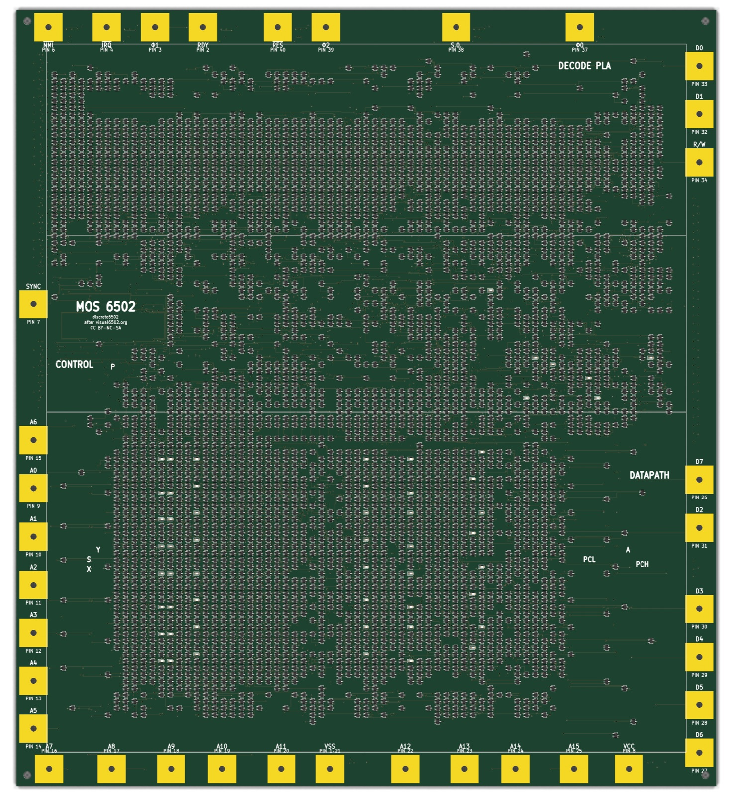
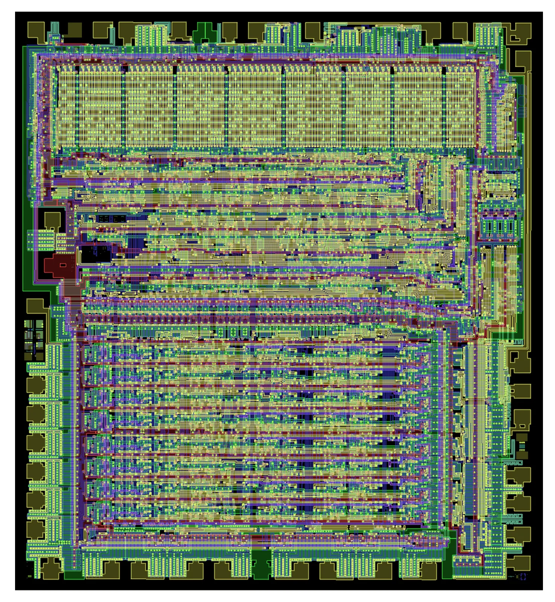
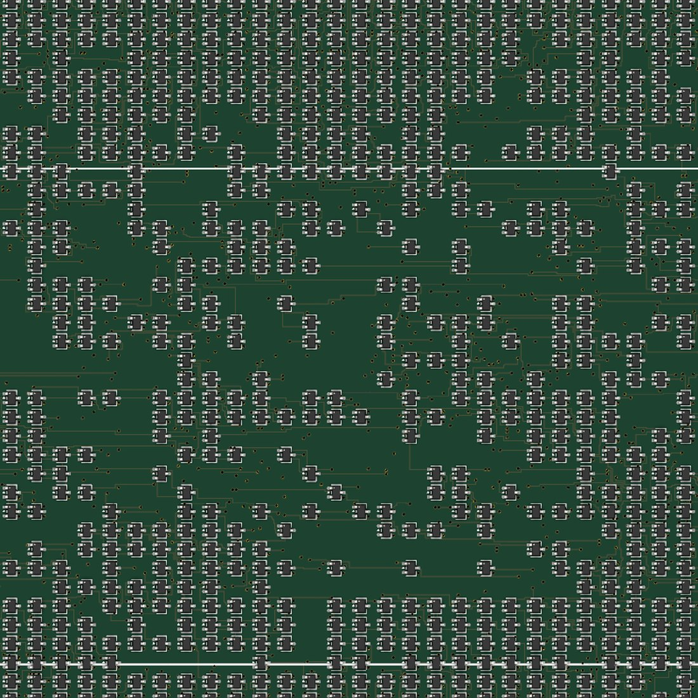
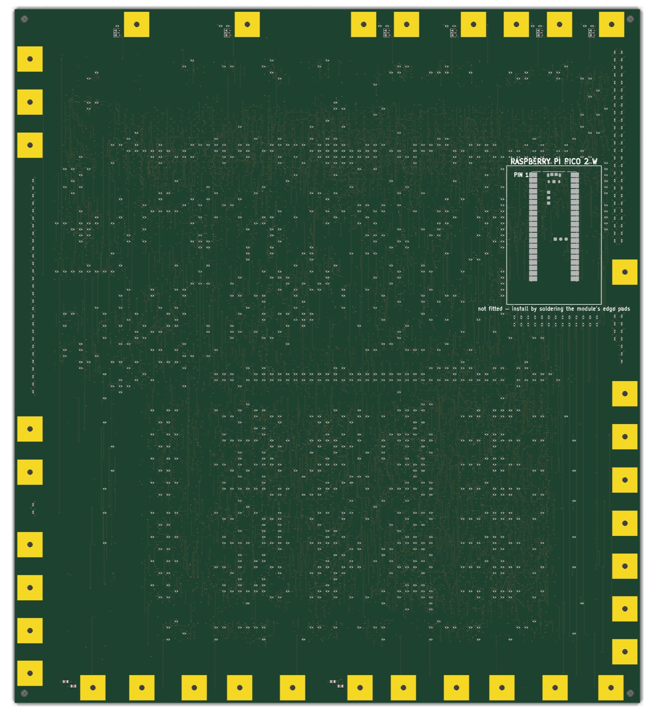

Hardware · work in progress
A MOS 6502 CPU rebuilt from 4,051 individual transistors — no chips, no FPGA — laid out so the board reproduces the original silicon die, transistor for transistor.
What this is
The MOS 6502 powered the Apple II, the Commodore 64, the NES and the BBC Micro. Inside its package sit roughly 3,500 transistors on a fingernail of silicon. This project takes that exact circuit and rebuilds it from parts you can see: every transistor becomes a separate SOT-323 package soldered to a board the size of a sheet of A4 paper.
It is not a simulation and not an emulation. The logic is the real thing — the same dynamic NMOS circuit the original used, running the same instructions, just a few thousand times larger and a few hundred times slower.


the board the die ← move across →The layout
Every transistor is placed at the coordinates of the transistor it replaces, scaled up from photographs of a real decapped 6502. Nothing about the arrangement is decorative — the stripes, the clusters and the empty channels are the chip's own floorplan, reproduced because the parts were told to go where the silicon put them.
The front face carries only transistors and LEDs, so the texture reads cleanly. Every resistor and capacitor lives on the back.

The instruction decoder — the dense, regular stripes across the top third. Its input lines each drive up to 71 separate transistor gates.
Registers and the ALU, in the ordered columns along the bottom. Bit lanes run horizontally, exactly as they do on silicon.
36 gold pads at the die's real bond-pad positions, 11.6 mm square and drilled for a crocodile clip. Labelled with the classic DIP-40 pin names.
One per register bit — A, X, Y, stack pointer, both halves of the program counter and 7 status flags — so the CPU's state is visible while it runs.
How it works
The easy version of this project converts the 6502 to modern static logic and calls it done. This one doesn't. It keeps the original dynamic NMOS design, where data is stored as charge on a wire's own capacitance and has to be refreshed by the clock before it leaks away.
The original's depletion-mode load transistors have no discrete equivalent, so 1,023 resistors of 10 kΩ take their place — which is also where nearly all the power goes.
778 of the transistors pass signals in both directions, impossible with a 3-terminal part. Each becomes a back-to-back pair — 1,556 transistors doing 778 transistors' work.
A pass gate should lose a threshold voltage. It doesn't: the clock edge couples through the gate and pushes the stored '1' above the supply rail. Verified in SPICE with the manufacturer's own model.
Roughly 10–20 kHz, against the real chip's 1 MHz. Driving 71 gates through one 10 kΩ resistor takes microseconds. Slow is the point — you can watch it think.
Method
At 5,421 components and 8,421 connections, hand-drawing a schematic is not slow — it is impossible. Every stage is a script, so the whole board can be regenerated from the source data with one command each.
Verification
A board this size cannot be debugged by poking at it afterwards, so correctness is established before fabrication and re-checked on every change.
| Check | Result |
|---|---|
| Switch-level simulation against the original netlist | identical traces |
| Board matches the generated netlist | 0 errors |
| Independent copper connectivity trace | 0 broken nets |
| Manufacturer design-rule check | 0 electrical violations |
The equivalence test runs real code. A program using the stack, subroutine calls, arithmetic and branches is executed on both the original visual6502 netlist and this transformed one. Every signal, every cycle, must match — otherwise the change is rejected.
Bring-up
A CPU alone does nothing — it needs a clock and memory. Both live on the back of the board: an unpopulated footprint for a Raspberry Pi Pico 2 W, wired to the data bus, 14 address lines, reset, read/write and SYNC.
Solder on a Pico, flash the firmware, and it becomes the clock master and a memory emulator — serving every instruction fetch, capturing every write, and tracing the bus cycle by cycle. No other equipment required.

Specification
| Item | Value |
|---|---|
| Transistors | 4,051 (3,996 logic + 55 LED drivers) |
| Transistor type | BSS138K, SOT-323 |
| Pull-up resistors | 1,023 × 10 kΩ |
| Register LEDs | 55 |
| Total components | 5,421 across 2,624 nets |
| Board | 290.7 × 322.0 mm, 6 layers, ENIG |
| Routing | 8,421 connections · 103 m of copper · 14,454 vias |
| Supply | 5 V (3.3 V also validated) |
| Power | ≈ 1.6 W typical, 3.2 W worst case |
| Clock | ≈ 20 kHz at 5 V, ≈ 10 kHz at 3.3 V |
Status
The design is finished. Every check passes, the manufacturing package is released and fingerprinted, and the boards are being ordered. No physical board exists yet — nothing here has been proven in copper, only in simulation and geometry.
| Milestone | State |
|---|---|
| Research the original die and netlist | done |
| Circuit feasibility, validated in SPICE | done |
| Generation toolchain | done |
| Logic equivalence proof | done |
| Layout, routing, manufacturing package | done |
| Fabrication and bring-up | in progress |
What could still go wrong: the dynamic logic depends on charge held on long board traces rather than microscopic silicon nodes, and on a bootstrap effect that has been simulated but never soldered. The first power-up is the real test.